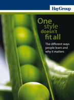

Recent Research Library Material
We are a research and development company devoted to advancement of the theory and practice of experiential learning.
To achieve this mission, EBLS is committed to
- building on the legacy of scholars whose innovative ideas continue to contribute to state-of-the-art knowledge about learning and education
- stimulating research and disseminating scholarly findings on experiential learning and the Kolb Learning Style Inventory
- offering resources that help individuals develop their own learning potential
- providing tools for educators, parents, and consultants that promote learning
Announcements
Learning Style Inventory (LSI) Version 4
In 1971 we set the bar for measuring how you learn in everyday life. Now we've set the bar higher.
Our instrument has long been respected for its design based on a comprehensive theory of learning and development. Based on data from years of empirical and clinical studies we've updated the original 4 Learning Styles types into 9. We've added a method to measure your learning flexibility and enhanced our reporting methodology. Read about more our improvements or learn how to upgrade today.
Featured Assessment Tools
Kolb Learning Skills Profile (LSP)

The Learning Skills Profile (LSP) is self-scoring inventory designed to help you assess the major skills you may be called upon to use in your job.
Kolb Learning Style Inventory (LSI) Version 4
 The Learning Style Inventory (LSI) describes the way you learn and how you deal with ideas and day-to-day situations.
The Learning Style Inventory (LSI) describes the way you learn and how you deal with ideas and day-to-day situations.Kolb Team Learning Experience (TLE)
 The Kolb Team Learning Experience will guide your team through the Cycle of Learning, providing your team with opportunities to experience, reflect, think, and do.
The Kolb Team Learning Experience will guide your team through the Cycle of Learning, providing your team with opportunities to experience, reflect, think, and do.Learning Partners
Bob Gemmell

Director of the Herman J. Russell, Sr. Center for Entrepreneurship at Georgia State University